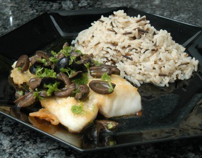

| Zutaten für 2 Personen: | |
| 1/2 | Zitrone |
| 2 El | Olivenöl |
| 50 g | entsteinte schwarze Oliven |
| 25 g | Kapernäpfel oder Kapern |
| 2 El | Petersilie |
| nach Bedarf | Salz, Pfeffer aus der Mühle |
| 1 El | Mehl |
| 2 | Dorschfilets (je ca. 100g) |
| 1/4 Tl | Salz |
| 2 Portionen | Wildreis-Mischung |
Vor- und zubereiten: ca. 30 Minuten.
Den Wildreis nach Packungsangabe zubereiten.
Zitronenschale abraffeln und die halbe Zitrone auspressen. Olivenöl zugeben.
Die Oliven vierteilen und zugeben. Die Kapernäpfel längs halbieren und zugeben.
Petersilie hacken und zugeben.
Nach Bedarf Salz und Pfeffer aus der Mühle zugeben. Die Vinaigrette jetzt zugedeckt beiseite stellen.
Die Fischfilets mit einem Viertel Teelöffel salzen und im Mehl wenden.
Die Fischfilets in Olivenöl in einer Bratpfanne beidseitig je ca. 4 Minuten braten.
Die Teller vorwärmen. Reis und Fischfilets anrichten, den Fisch mit der Vinaigrette beträufeln.
Betty Bossi Buch "Kochvergnügen für Zwei", 2002, Seite 21
Schmeckt sehr gut! RE 31.12.2010
@LINKBACK_TAG@ @WAKELOCK@